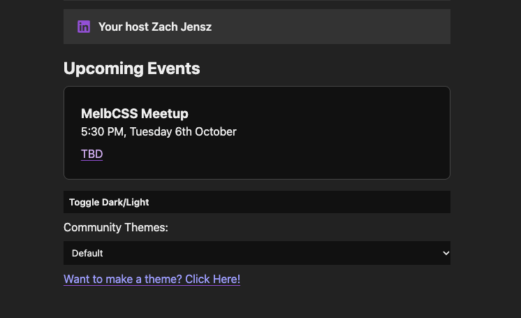

The obvious way
Pick a Community Theme on melbcss.com and a stranger's stylesheet runs on the page — submitted by pull request, merged by a human, live for everyone.
And this is the honest vector — the one you opted into. The rest you didn't.
